Nemuro
Nemuro · Hokkaido
Nemuro
Highlighted on the Hokkaido map.
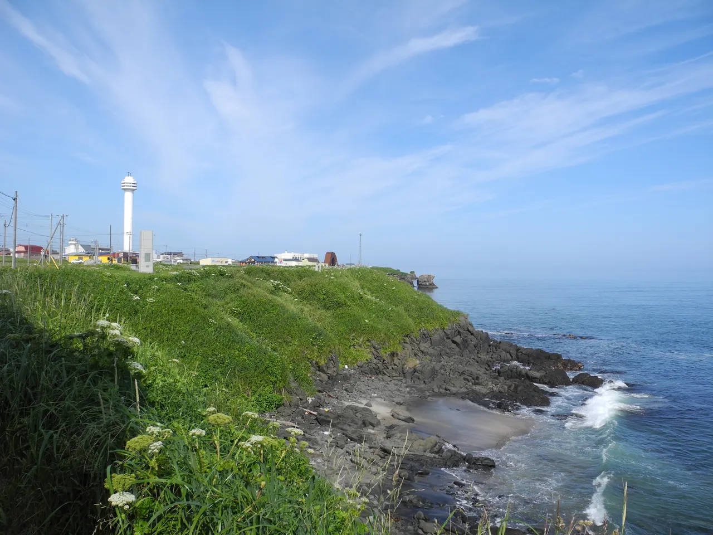
Stay
Ｔａｂｉｓｔ ホテルねむろ海陽亭
T A B I S T Hoteru Nemuro Kaiyou Tei
根室グランドホテル
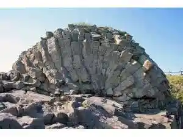
Nemuro Gurandohoteru
Ｔａｂｉｓｔ ホテルニューねむろ
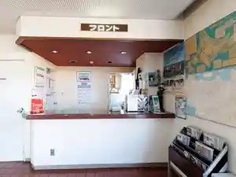
T A B I S T Hoterunyuu Nemuro
イーストハーバーホテル
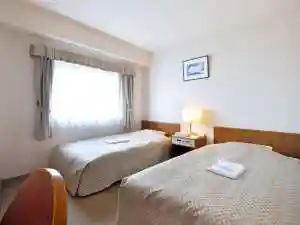
Iisutohaabaahoteru
照月旅館
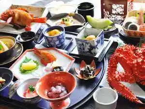
Shou Gatsu Ryokan
Guest House ネムロマン
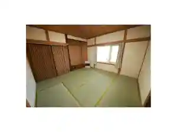
Guest House Nemuroman
ワーキングハウス
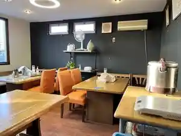
Waakinguhausu
お宿 エクハシ
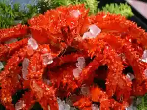
O Yado Ekuhashi
旅館 二美喜
Ryokan Futami Ki
民宿 花咲
Minshuku Hanasaki
レストラン＆コテージ レイクサンセット
Resutoran & Koteeji Reikusansetto
Dining
セブンイレブン 根室敷島町店
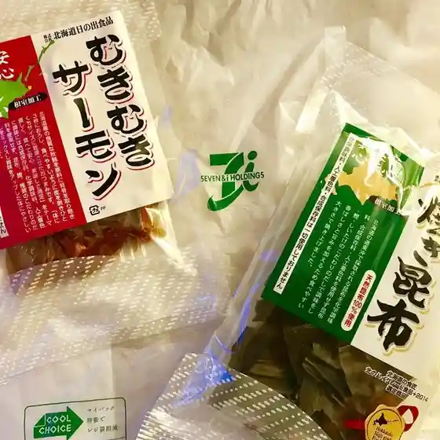
Sebun'Irebun Nemuro Shikishima Machi Mise
すし善
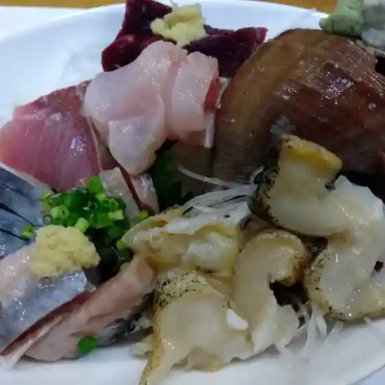
Sushi Zen
かふぇ ぷらっと
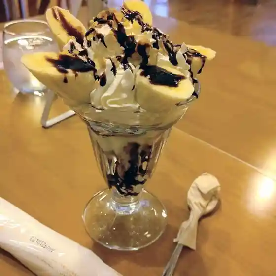
Kafe Puratto
エクハシの宿
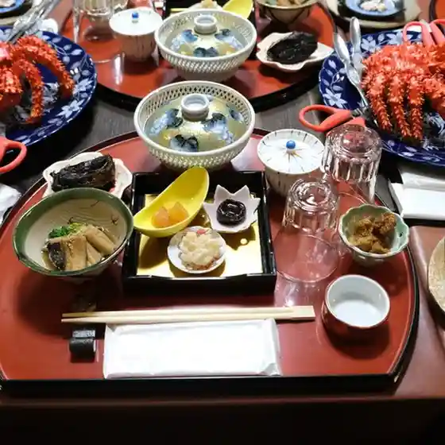
Ekuhashi No Yado
請望苑
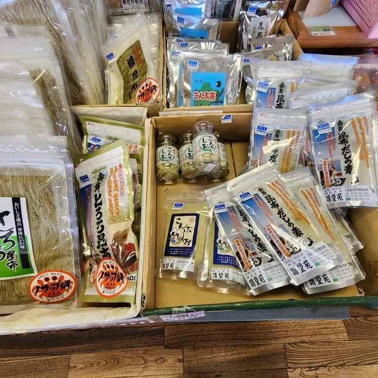
Sei Bou En
居酒屋ふるさと
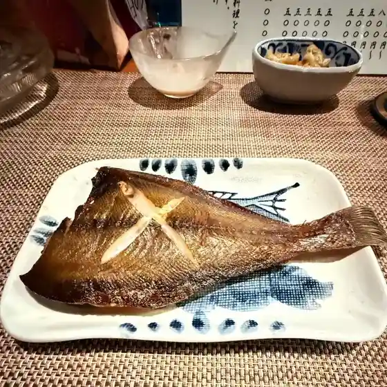
Izakaya Furusato
味っ子

Ajitsu Ko
アピカル
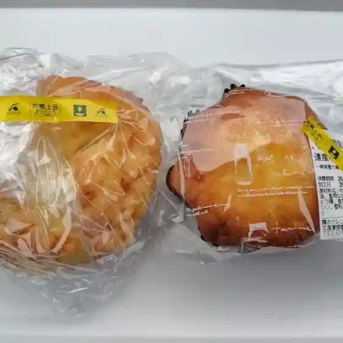
Apikaru
ＪＵＮＫ
J U N K
マイウィング
Maiuingu
遊食酒場 壱炉 梅ヶ枝店
Yuu Shoku Sakaba Ichi Ro Ume Ke Eda Mise
Bar Azito
Bar Azito
二美喜
Futami Ki
えびすや
Ebisuya
北然仁
Kita Zen Hitoshi
つけめん扇や
Tsukemen Ougi Ya
茂勝
Shigekatsu
詩菓家
Shi Ka Ie
JAZZ＆COFFEE サテンドール
Jazz & Coffee Satendooru
どりあん
Dorian
根室物産館 光風
Nemuro Bussan Kan Koufuu
にのみやラーメン
Ninomiya Raamen
壱炉
Ichi Ro
しゃぶしゃぶ 鼓ふく
Shabushabu Tsuzumi Fuku